本期是汇率系列的第二讲。爆姐强调：任何逻辑都要建立在可量化的数据之上，所以这一讲先用一组真实的日成交额数据， 把全球外汇市场的体量、币种结构、交易品种和交易用途完整"画"出来，颠覆"股市最大"的直觉。随后转入人民币自身， 讲清人民币汇率其实有三个——在岸价（CNY）、离岸价（CNH）和央行每日公布的中间价，以及普通人换汇时为何总拿不到新闻里的那个价格。 最后重点拆解在岸与离岸人民币之间的"量子纠缠"：离岸没有指导价，为什么却不会脱缰，央行又是如何通过贸易互通、金融套利、 离岸央票等市场化+半市场化手段，让两条汇率曲线紧紧贴在一起的。
爆姐开门见山：汇率课预计要讲3到4节，东西很多。而要构建任何宏观逻辑，前提是先有可量化的数据事实——不能靠"我觉得"。所以本讲第一部分，就是用一组真实数字，给大家勾勒出外汇市场到底是个什么样子。
数据口径先说明：美元汇市没有官方统计，来自国际清算银行（BIS）三年一次的调查问卷，上一次是2022年（下一次2025年才取样更新）；美债、美股以及中国债市、股市的数据来自交易所/行业协会官方披露，引用的是2024年。单位全部是万亿美元/天，是日均成交额，不是每月每年。
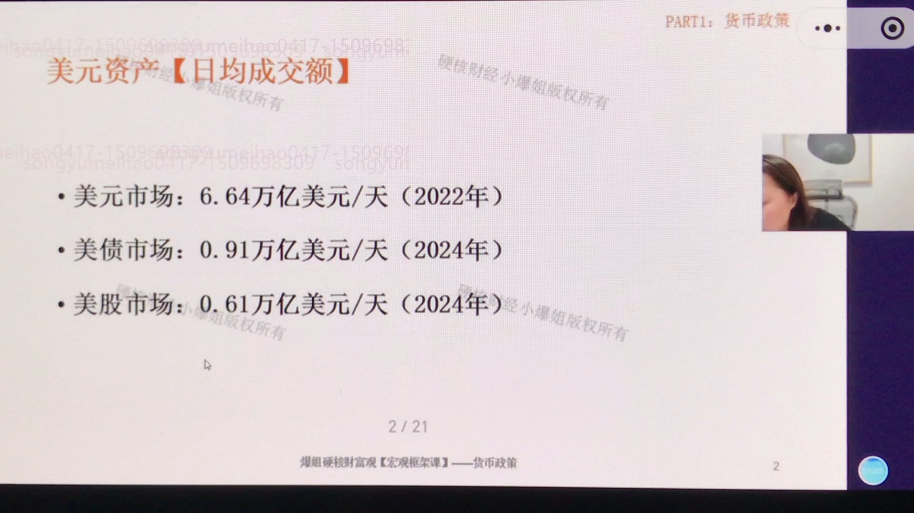
先看美元资产的日成交额，三个市场放在一起对比：
从这三个数字里能看出两个反直觉的结论：
记住这个量级：在整个金融体系里，汇市才是全球最大的交易市场，股市反而是最小的那个。这和普通人"炒股才是最大市场"的直觉完全相反。
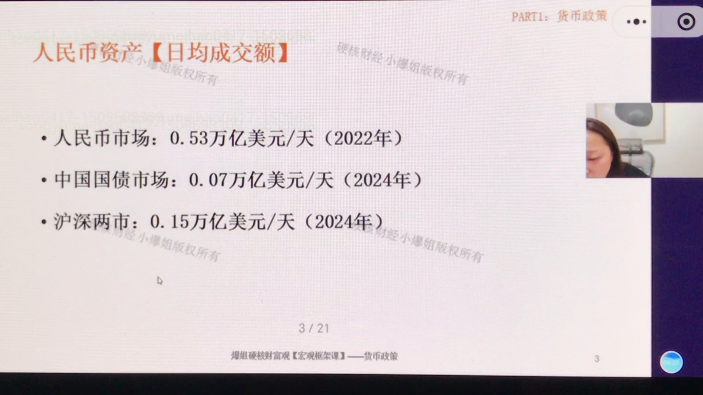
再看人民币资产的日成交额，结构略有不同：
和美国对比后会发现：有一点不同，也有一点相同。
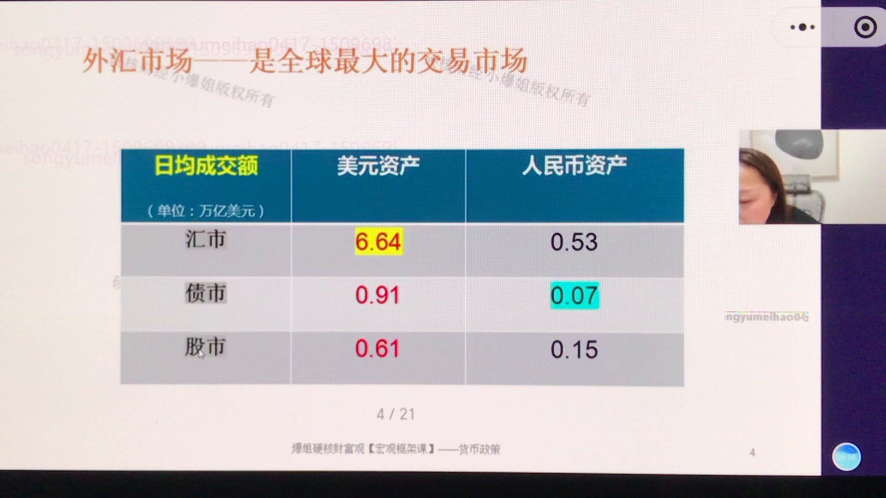
把两组数据拼成一张对照表（单位：万亿美元）：
第一眼看去，美元侧每一项都远大于人民币侧：我们的体量无论汇市、债市、股市都很小。其中美元汇市约是人民币汇市的12.5倍（6.64÷0.53）；而最刺眼的是中国国债，日均只有0.07万亿，比美债整整小了约13倍。
爆姐在这里回扣了前面货币政策课的内容。中国货币发行有三种方式：外汇占款、金融机构再贷款、央行买国债。但我们主要靠前两种，通过买国债来发行货币的占比非常低，国债市场本身盘子就不大；再加上债市参与者基本都是银行，换手率低，日均成交额就更小。
对照之下：美国货币发行主要靠购买美债，其他两种方式接近0，所以债市先天盘子就大。理解了两国货币发行方式的差异，就理解了为什么美国"债市>股市"、中国"股市>债市"。另外，美元之所以汇市体量这么大，是因为它扮演了"中间货币"——人民币换韩元，往往要先换成美元再换韩元，美元被交易两次，成交量自然被放大。
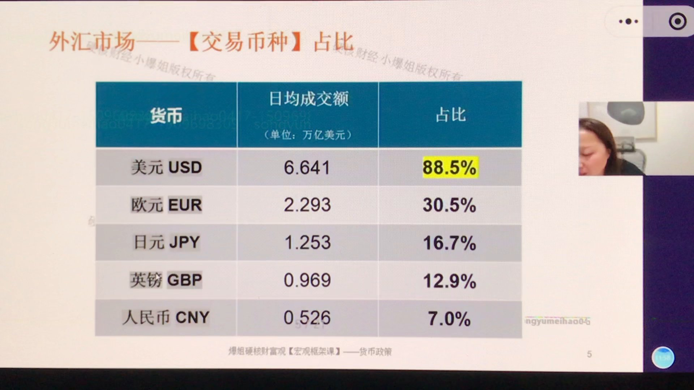
在这么大的外汇市场里，各币种占比如何？2022年数据显示，美元遥遥领先，排在后面的依次是欧元、日元、英镑，最后是人民币：
一个反常识的点：把这些占比加起来会超过100%——因为汇率永远是两种货币成对交易，美元兑人民币算一次、人民币兑美元又算一次。所以全球所有币种占比加起来，总和是200%而不是100%。
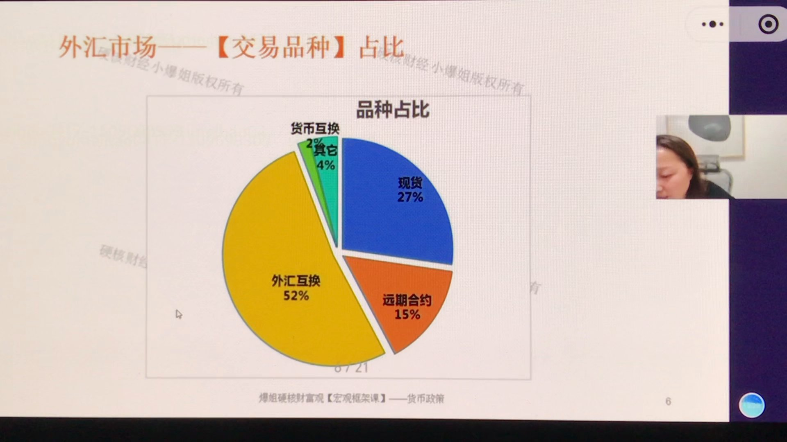
再看美元外汇市场的交易品种结构。占比最高的不是现货，而是金融衍生品：
换句话说，超过70%的交易由金融衍生品主导，现货只有27%。这种结构不只存在于美元市场，全球其他币种市场也大体如此。
那27%的现货用在哪？主要用在外贸领域——商品和服务进出口确实需要用到现货外汇。但在投资领域，几乎没有人用现汇现钞去交易。这也从数据上回答了"现在美元要升值，我要不要换美元拿在手里"——全球做交易的人都不用现货，普通人更不该用。
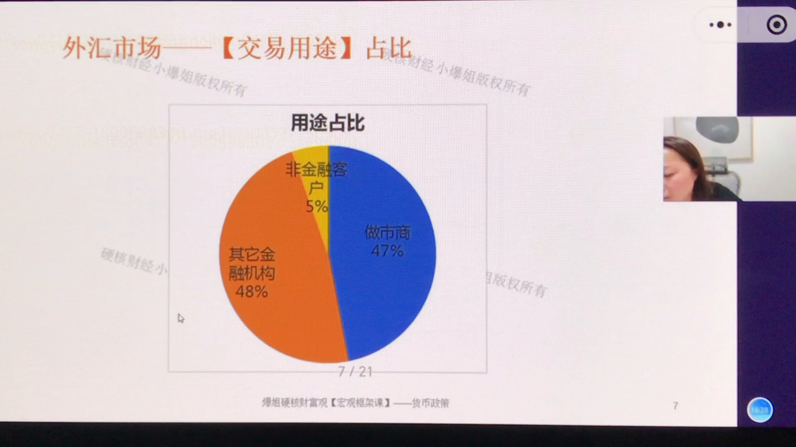
把美元外汇成交额按用途拆开，结论更惊人：
也就是说，做市商加其他金融机构贡献了约95%的成交额，全是金融用途；真正和外贸、实体经济相关的需求，占比不到5%。
这组数据揭示了外汇市场的本质：它是一个高杠杆、高专业性、由金融机构主导的市场，是金融玩家的天堂，而不是普通散户该参与的地方。绝大多数外汇交易是金融投资驱动，而非贸易驱动。
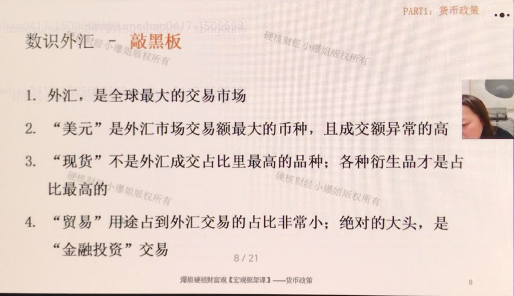
爆姐说，上面这些枯燥的数字不需要死记，记住四个结论即可：
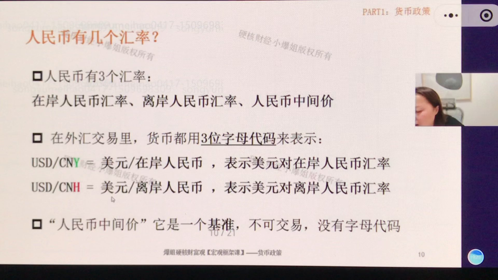
平时我们说"人民币汇率7.2"，其实并不严谨——因为汇率一定是两种货币的比价，而且人民币汇率本身就有三个：
专业外汇交易里，货币都用三位字母代码表示：
沟通建议：以后问汇率问题，请直接用 USD/CNY、USD/CNH 这样的代码。只说"人民币汇率怎么走"，别人既不知道你问的是哪种货币对人民币，也不知道你问的是在岸还是离岸。
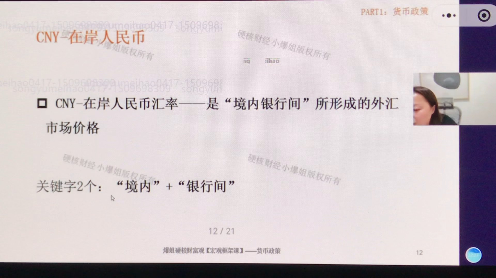
在岸人民币汇率，是"境内银行间"形成的外汇市场价格。记住两个关键字："境内" + "银行间"——必须是在境内、且是银行之间互相交易形成的价格。
这里有个关键误区：你拿外汇去银行换人民币，拿到的并不是在岸价。假设现在 USD/CNY 是 1:7.3，你拿1美元去银行，是换不到7.3元的，到手会更少。
原因：在岸价是银行之间的"批发价"，而你和银行之间是"对客价"（零售价）。现货交易里包含一系列摩擦成本：买卖差价、银行加成、风险合规与库存成本、现汇现钞调拨成本、定价时点不一致带来的滑点、串换成本等等。
就算假设汇率完全不动、风平浪静，只要你把人民币换成外币出境、将来再换回来，每个方向都有你根本算不清的摩擦成本。
一出一进，摩擦成本可能高达1%。这意味着：如果你赚的汇率差价不到1%，等于白干；一旦汇率波动方向和你持仓相反，一开始就先亏一个点。这就是为什么反复强调——不要用现货（现汇现钞）去做外汇。
外汇掉期、远期合约这类衍生品，本身就能锁汇，可以直接做无风险套利，再加杠杆放大收益；现货没有这些功能，只能干扛摩擦成本和不确定的汇率波动。风险收益比完全不在一个量级。
2022—2023年香港推过短期高息储蓄，年化给到10%，但要求必须是新入金（即必须新换汇过去）。看似10%很高，其实是年化，一个月利息不到0.9%；而你换汇出去、将来换回来的摩擦成本就有约1%。汇率不动都先亏，汇率再一波动亏得更多。
正确的换汇姿势只有一种：换外汇必须对应到一项境外资产——拿美元买美债、买美股、买黄金。如果不对应任何资产，纯粹拿着货币本身，一定非常亏。另外，主要国家货币没有单边长期走势，都是围绕美元周期、经济周期上下波动，长期死拿单一货币还要承担巨大的时间成本。
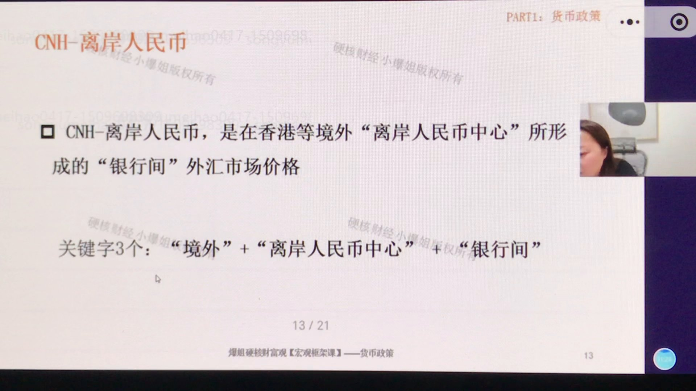
离岸人民币，是在香港等境外"离岸人民币中心"形成的"银行间"外汇市场价格。三个关键字："境外" + "离岸人民币中心" + "银行间"。
离岸人民币中心有好几个，记住"一主两次"即可：
补充一点：不同离岸中心的人民币价格可能略有差异，但这属于专业交易员才需要深究的细节，普通人用不上。
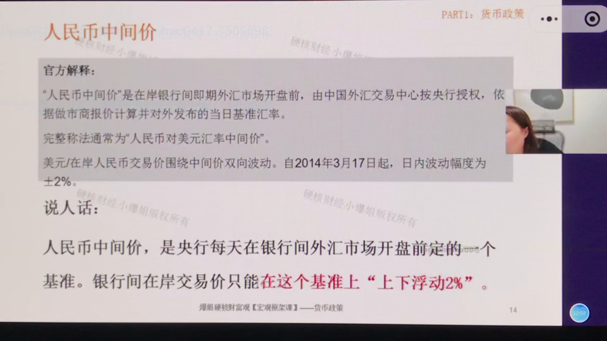
官方解释很长，翻译成大白话：
人民币中间价，就是央行每天在银行间外汇市场开盘之前定的一个基准。银行间的在岸交易价，只能在这个基准上上下浮动2%（自2014年3月17日起，日内波动幅度为±2%），不能超出。所以在岸价确实是交易出来的，但它是被限定在一个范围内交易出来的。
中间价由央行（授权中国外汇交易中心）制定，归央行管。它是基准，不能直接用来交易。
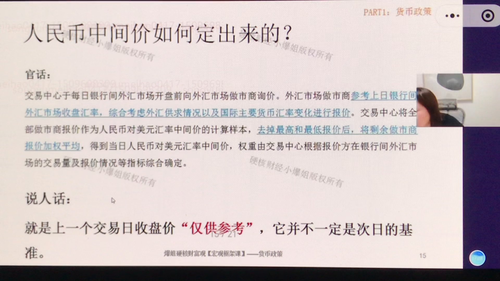
碰过股票的人都知道，今天开盘价的基准是昨天收盘价。但人民币中间价不一样：
上一个交易日的收盘价，"仅供参考"，并不是次日的基准。举个例子：昨天在岸价跌到7.5，今天开盘央行并不必须以7.5为基准上下浮动2%，而是可以根据想要的政策方向，把基准定成7.2、7.3、7.4任意一个价格。比如打关税战出口压力大、希望贬一点，就把基准定低一点；汇率跌太狠、信心受损，就把基准定高一点。
爆姐举了一个真实案例：今年4月8日打关税战，在岸人民币收盘价贬到7.35（全天贬约1%）；第二天4月9日，中间价直接开到7.21，相对前收盘偏离近2%，相当于一夜之间把前一天的贬值拉了回来。从那天起，人民币开启了一轮升值。
那么，中间价大幅偏离前一日收盘价，是不是就意味着人民币趋势"拐头"了？不能这么理解。
它只能证明一件事：监管认为人民币发生了"超调"风险——涨太多或跌太多，需要修正。央行并不怕人民币涨、也不怕它跌，怕的是它单边超调。大幅调整中间价，代表的是监管的态度，目的是把汇率拉回合理区间、平稳震荡，而不是宣布趋势反转。
真正决定汇率中长期拐头的，还是上一讲讲的底层逻辑——经济基本面是否过硬。汇率体系里并没有像利率那样明确的"走廊"，央行对中间价的每日管控，有点那个味道。
使用上要克制：外部会诟病人民币汇率"不够市场化"，但实操中这种调控是必要的。不过央行不会天天人为乱调（昨天7.5今天拉7.2后天拉7.8），那样会丧失权威性、资金跑去黑市交易。通常只有发生超调风险时才会大幅干预，目标是让汇率走成一条平稳的线。
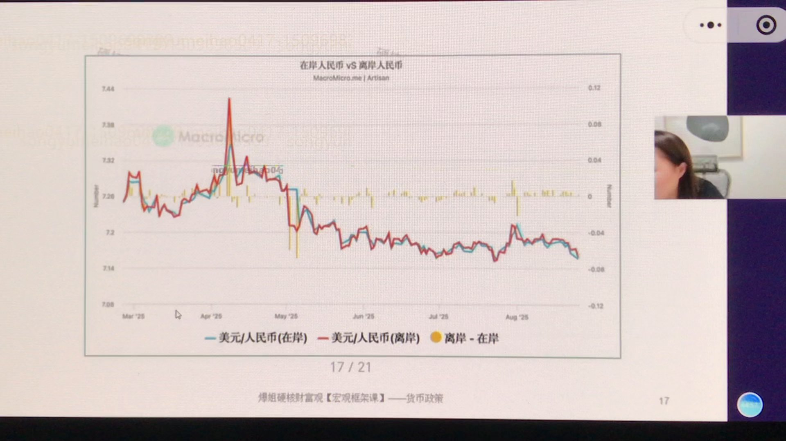
前面说在岸价被中间价"±2%"管着，那离岸人民币（CNH）有没有类似中间价的指导机制？结论是：没有。离岸完全市场化，没有统一官方指导价。
那离岸岂不成了脱缰野马？看PPT这张图：红线是离岸价、蓝线是在岸价，两条线紧紧"纠缠"在一起，走势非常接近，从没跑崩。它是怎么做到的？
央行靠的是更市场化的方式管理离岸：一是让在岸与离岸人民币在特定场景下可以互通；二是央行通过放松/收紧人民币供给、调整银行监管指标来调节离岸流动性。下面分别看。
一家出口企业，在内地和香港都有公司。收到美元货款后有两个选择：
企业一定会选"能换出更多人民币"的那个渠道。假设离岸价1:7.3、在岸价1:7.2，大家都跑去香港换更划算的离岸人民币，离岸人民币需求大于供给、自然升值，一直升到7.2、与在岸拉平为止。
同时经营在岸、离岸业务的做市商（主要是大型中资银行如中国银行，以及少数外资行），可以在两个市场之间低买高卖赚差价。比如离岸便宜时在离岸买人民币、在岸贵时卖给在岸客户，赚中间价差。大家都去套，离岸人民币被买升，直到两地汇率拉平。
实操补充：做市商并不能直接跨境转移人民币，需要依托客户真实的结售汇需求"绕道"完成——这是银行的事，普通投资者不用深究。你只要记住：在岸价有中间价当"底"（±2%），离岸完全市场化，靠贸易互通和金融套利两股力量，让两条汇率曲线无限贴近。
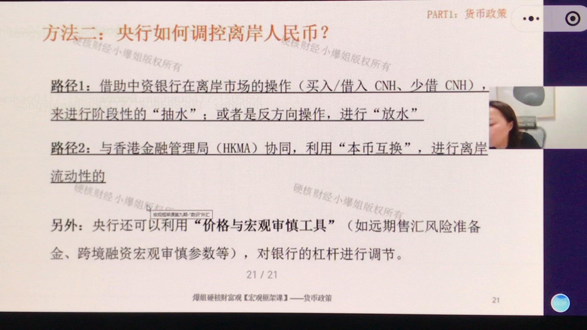
除了市场化互通，央行还可以直接调控离岸人民币，主要路径是调节离岸流动性、抬高或压低拆借成本：
为什么央票多在香港发、国内很少发？因为在境内收流动性，央行直接下场卖国债就行；而海外没有这个条件。更关键的区别：央票是央行自己借钱，利率可以自己定，是纯粹的流动性工具；国债是政府借钱，收益率是"利率锚"，不能为了收水随便乱发、乱定利率，否则会干扰整个市场定价。
一句话总结这套机制：在岸是"半市场化"（中间价±2%管理），离岸是"全市场化"（贸易+套利自由收敛），央行再辅以离岸流动性管理工具做间接引导。两者既有市场化一面、又有半市场化手段，最终实现CNY与CNH的"量子纠缠"。
本讲是汇率系列第二讲，核心收获：
第一，外汇是全球体量最大、专业化程度最高的金融市场。美元资产日均成交额：汇市6.64万亿、债市0.91万亿、股市0.61万亿美元——汇市是债市的7.3倍、股市的10倍以上；人民币资产对应为0.53/0.07/0.15万亿。美国"债市>股市"、中国"股市>债市"，根源在于货币发行方式（美国买国债为主，中国外汇占款+再贷款为主）。
第二，外汇市场结构：币种上美元遥遥领先（约88.5%），因成对交易所有币种占比总和为200%；品种上金融衍生品占七成以上（外汇互换52%为最大头），现货仅27%且主要服务外贸；用途上做市商+金融机构占95%，贸易实体仅约5%。这是一个高杠杆、高专业的机构主场，散户不该参与。
第三，人民币汇率有三个：在岸价CNY（境内银行间批发价）、离岸价CNH（以香港为主的离岸中心银行间价）、人民币中间价（央行每日开盘前定的基准，不可交易、无代码）。普通人在银行换到的是含摩擦成本的"对客价"，来回约1%，所以不要用现货炒汇，换汇必须对应美债/美股/黄金等境外资产。
第四，中间价是在岸价的"锚"，在岸交易只能在其上下2%内浮动。中间价并不简单等于前日收盘，央行可主动设定；当它大幅偏离前收盘，代表的是监管对"超调风险"的修正态度，不是趋势拐头，中长期方向仍看经济基本面。
第五，离岸没有中间价却不脱缰，靠贸易互通与跨市金融套利两股市场化力量与在岸"纠缠"收敛；央行另借助中资银行抽水放水、与香港金管局8000亿本币互换、发行离岸央票、宏观审慎工具等间接调控离岸流动性。央票是央行自己借钱、利率可调的流动性工具，区别于作为利率锚的国债。
第六，汇率系列后续还要至少2节，将讲汇率对资产的影响、离岸人民币发行逻辑、外汇衍生品交易规则等。务必把已发布的9节课至少看1—2遍，前置知识不然后续会越听越糊涂。
以下为课程配套的专业版知识卡片，标题为"货币政策第9期：汇率（2）——外汇市场量化剖析与人民币汇率'三价'运行机制"，汇总了本期核心知识点的完整框架。

以下为极简版知识卡片（副标题：看懂外汇市场，揭秘人民币的三张"脸"），用问答形式快速回顾核心概念。
